Functional relevance and inductive development of an e-retailing product information typology
Xiaoli Huang
Business School, Sun Yat-sen University, No. 135 Xingang West Road, Guangzhou 510275, China
Dagobert Soergel
Department of Library and Information Studies, Graduate School of Education, University at Buffalo, 534 Baldy Hall, Buffalo, NY 14260-1020, USA
Introduction
This study develops a typology of the types of product information given on an e-commerce website. Such a typology is a prerequisite for investigating and comparing the effects of various types of product information on online consumer decision-making.
Online product information provided by dot-com storefronts plays a central role in informing the consumer of the product value and strengthening the consumer's confidence in making the right purchase (Jeong and Lambert 2001). Since they cannot physically inspect a product as they could in brick-and-mortar stores, online shoppers base their decisions mostly on information they receive on the Internet. In the virtualized shopping environment, they feel more risk (Antony et al. 2006) and become highly responsive to the online product information they are getting.
Effective provisioning and organization of online product information becomes increasingly critical for the profitability and survival of Internet retailers and manufacturers (Lee and Lee 2004). As dot-com storefronts provide an increasing amount of product information to attract Internet shoppers, information overload has become a pressing issue for online shopping. Information overload occurs as the amount of provided information exceeds individuals' information processing capability (Jacoby 1984). Just as information inadequacy, too much information also leads to declines in the quality of decision-making performance (Allen and Shoard 2005). The phenomenon of information overload has caught a great deal of attention from marketers and marketing researchers since the 1970s. A series of works thoroughly demonstrated that information overload not only decreases the accuracy of consumer decisions, but also leads to less satisfaction and reduced confidence in the decision-making process (Chen et al. 2009; Jacoby et al. 1974; Allen and Shoard 2005; Yang et al. 1998; Keller and Staelin 1987; Lee and Lee 2004; Lurie 2004; Maes et al. 1999; Malhotra 1982, 1984). With the increasing popularization of small-screen mobile e-commerce, information overload poses an even more serious challenge for practitioners and researchers.
E-commerce information research to date has focused primarily on information quality and information display, but lacks studies on content-based information types. The types of product-relevant information and their mechanisms for affecting consumer decisions are not well understood. The existing information-type research seems limited to only one information type, customer review. Regarding many other types of product information such as product comparisons, return policy, manufacturing details, retailer reputation, use scope, side effects and so on, research is largely absent or only scratching the surface. There is not yet research that systematically investigates and compares the functional roles played by different types of product information and hardly any in-depth knowledge is currently available on their impact on consumer trust, perceived value, perceived risk, and purchase intention in the e-retailing context.
Our project aims to bridge this gap by systematically analysing online product information types and their differential effects on Internet consumer decision making. To carry out an in-depth investigation and comparison, first we need a scheme to systematically categorize different information types from amass of online product information, preferably by different functional roles they play in consumer perception and decision making. This paper reports on a pilot study of applying a typology of function-based topical relevance relationships (Huang 2009a, 2009b, 2013; Huang and Soergel 2004, to analyse online product information types.
Literature review
A generic typology of topical relevance relationships
Topical relevance is the fundamental concept of information organization and information retrieval (Cooper 1971; Green 1995; Green and Bean 1995; Hjørland 2010; Huang and Soergel 2004; Wilson 1973). Topical relevance is the logical connection between topic and information, between topic and topic, and between information and information. It provides the cognitive foundation for human thinking, reasoning, communication, and decision making. Without recognizing and understanding the relevance connection between an input (or a stimulus) and its context, we could hardly make it through simple daily conversations in which inferential communicative intentions are often embedded, nor could we come to any meaningful judgment or conclusion about a given situation (Wilson and Sperber 2002). Therefore, topical relevance with its close linkage to thinking and reasoning is central to many disciplines.
Huang (2009a, 2009b, 2013) conducted a multidisciplinary inquiry into topicality by analysing theories and thinking from communication, rhetoric, cognitive psychology, education, information science, argumentation, logic, law, medicine, and history. As the major outcome, the inquiry constructed a theory-grounded and empirically-verified typology of topical relevance relationships, providing a conceptual basis for a generic, function-based, topic-oriented information framework (Figure1) that is meaningful across topics, domains, and data forms. In particular, the framework is based on functional role, that is, the role a piece of information plays in the overall structure of a topic, by taking into account its relations with other parts of the given information. It adopts the perspective of rhetorical structure theory in discourse analysis (Mann and Thompson 1988, Taboada and Mann 2006): 'for every part of a coherent text, there is some function for its presence, evident to readers' (Taboada and Mann 2006: 425). The emphasis of the functional classification is on the cognitive effect achieved on the receiver, such as a reader, a hearer, an information user, a consumer, etc. The cognitive effect refers to a substantial change of the receiver's knowledge state or viewpoint after receiving a piece of relevant information, which can confirm, reinforce, revise, or disprove the receiver's original beliefs. As applying to e-commerce, each kind of product information relates to the product in a different topical way and plays a specific role in enhancing the consumer's perception of a product's value as well as associated risks, and strengthening or adjusting his/her buying intention. For example, product feature description and return policy relate to a product in two very different ways and each plays a different functional role in influencing the consumer's purchase decision: feature description directly improves the consumer's understanding of the product's value while return policy contributes to reducing his/her anxiety of making the buying decision. Essentially, the function-based relevance typology provides a relationship framework for specifying the functional role of each type of product-relevant information and differentiating their cognitive effects on the consumer. The functional classification directly ties with the consumer's knowledge state and cognitive process underlying online decision making.
The function-based classification has been successfully applied to analyse three heterogeneous datasets in oral history, clinical question answering, and art image tagging (Huang 2009a, 2013; Huang and Soergel 2004, 2006 ). Moreover, Huang and White (2005) developed policy-capturing models (regression-based) to explore individual effects of different relevant information on the user's relevance judgment; in these models, highly consistent results were found regarding the relative importance of each information type for the user's overall judgment. Similarly, the current study extends the research to the e-business context by investigating individual effects of various types of product-relevant information on the overall purchase decision. The findings from this study also help to further enrich the generic topical relevance typology.
Figure 1: Function-based relevant information typology
Product classification, information type, and online shopping preferences
From the perspective of advertising, a number of studies have proved strong associations between the information type and the consumer's shopping preferences for product classes (Girard et al. 2002, Korgaonkar et al. 2006, Nelson 1970, 1974). However, this line of research never systematically defined various information types, neither did they systematically investigate and compare their individual effects on consumer decision making.
Nelson's Advertising as information (1970) introduced a product classification which soon gained wide acceptance and has since provided a fruitful avenue for understanding merchants' information provision (advertising) in relation to consumers' buying behaviour. The product classification originally began with two major categories, search product and experience product. It was later refined and extended (Darby and Karni 1973, Klein 1998, Nelson 1974) and eventually adapted to analyse Internet retailing (Girard et al. 2002, Korgaonkar et al. 2010, Korgaonkar et al. 2006, Lal and Sarvary 1999). The product classification as adapted to e-retailing is summarised as follows (recognizing that in the context of e-retailing these distinctions are fuzzy, Korgaonkar et al. 2006):
- Search products: the consumer can determine the quality of the product before the purchase by searching information about the product. Examples are books and laptops.
- Experience products: the consumer cannot (or only with great difficulty and expense) determine the quality of the product before the purchase; instead s/he needs to personally experience the product to determine the quality. Examples are clothing and perfumes.
- Credence products: the consumer has no way of fully evaluating and determining the quality of the product neither before nor after the purchase; instead s/he has to base the purchase on credence or trust of the brand. 'This occurs because the consumer may not possess sufficient technical expertise to assess the product's true performance' (Ford et al. 1988: 240) and the effects of these products are often not directly perceivable. Examples are water purifier, vitamins, and anti-aging cream.
Research found significant differences between search, experience, and credence products with respect to the types of information consumers prefer in advertising. Direct information is preferred for shopping search products and indirect information (such as brand reputability and endorsements) is preferred for shopping experience products (Nelson 1974). For e-retailing, products with “digital attributes (which can be communicated on the web at very low cost)” are more likely to succeed than products associated with 'nondigital attributes (for which physical inspection of the product is necessary)' (Lal and Sarvary 1999: 485). Digital attributes are mostly corresponding to search products whereas nondigital attributes are often associated with experience and credence products (Korgaonkar et al. 2006). From a series of empirical analyses, consumers demonstrate stronger preference for shopping search products rather than experience and credence products on the web ( Girard et al. 2002, Korgaonkar et al. 2010, Korgaonkar et al. 2006). This preference can be attributed to online information provisioning: the provided standard direct product information is usually sufficient for consumers to make informed decisions about purchasing search products, yet it is inadequate for consumers to judge experience and credence products. Instead, when evaluating experience and credence products, consumers tend to draw on indirect, contextual, and evaluative information, such as the retailer's reputability information, third-party evaluation, product comparison guides, and customer reviews.
Given its strong influence on consumers' information preferences, our study considers product type as a significant factor to moderate the decision effects of information type. It guides us to collect online product cases for the following analysis and provides a conceptual basis for identifying useful strategies for organizing online product-related information.
Research questions
This pilot study intends to answer the following two research questions:
- What are the manifestations of the function-based topical relevance typology in the e-retailing context? Which relevance categories are applicable and which are not?
- What information types are present in online product pages? And what information types are absent? Do these vary with the type of product?
Method
This is an exploratory study with sixteen product cases were collected from Amazon, including five search products, six experience products (three electronics and three traditional goods), and five credence products.. We used qualitative content analysis and pattern matching to conduct in-depth analyses of the information types present from the samples. Many studies using qualitative content analysis to look for themes (Trochim and Kane 2005), patterns (Thompson 1996), or the largely rhetorical structure of texts (Kiser 1997). This study uses qualitative content analysis to specify the function-based topical connections between the product of interest and the product information provided.
To improve methodological precision and rigour we used template analysis and editing analysis (Marsh 2002; Miller and Crabtree 1992) to guide the analysis.
- Template analysis is a semi-structured coding process that uses templates and code books developed before data analysis. The template can be thought of as a coding scheme or an analysis guide; it can be developed based on a variety of preconceptions, such as 'theory, research tradition, pre-existing knowledge, and/or a summary reading of text' (Miller and Crabtree 1992: 19). We used the initial generic typology as a guiding template to analyse how the broader topical relevance categories apply to analysing Amazon product pages. Interaction of the data and the template (scheme) introduced continuous revisions to the template and involved several iterations until no new revisions were identified (reaching the point of saturation, Lindlof and Taylor 2002).
- Editing analysis mirrors the open coding phase in inductive analysis (Lindlof and Taylor 2002, Marsh 2002), whereby the inquirer approaches the data with minimal preconceptions and proceeds to develop conceptual categories through an inductive process (Strauss and Corbin 1990). We used it for analysing finer levels of topical relationships to further extend the hierarchy and thus developed the fine-grained structure under each broad relevance category inductively from the data.
Results and discussions
The findings confirm that the overall topical relevance framework with the broad relevance categories remain meaningful and stable as adapted to the e-commerce domain. Direct, context/condition, comparison, and evaluation are the prevalent information types identified from the Amazon case analysis. Table 1 summarizes all the relevant information types and subtypes identified from the analysis. Although the broad relevance categories remain similar, many domain-specific subcategories are suggested from the study. Taking the context category as an example, purchase (selection)-related and use-related context are completely new subcategories without direct mapping to the original typology. They are specific to analysing e-commerce cases and quite important for online consumer decision making.
| Relevance category | Sub-categories analysed from Amazon cases | Relevance category | Sub-categories analysed from Amazon cases |
|---|---|---|---|
| Direct |
Title or product name Price Colour Dimension or size Shipping weight Length Format or version ID or item model Language Parts or components Ingredients Features, capabilities or functions Technical specifications (standards) Image or view Manifestations*, sample, preview or excerpt Illustration |
Context |
Provenance-related context: Provenance or biographic information* About provenance info elements: Info. about the author Info. about the manufacturer Purchase (selection)-related context: Stock Promotion Selection guide Shipping Warranty & return policy Use-related context: User instruction Use scenario Life span Safety information Maintenance Relations with other products: Broader scope* Used by Recommendation Brought together |
| Comparison |
By difference*: Price comparison Format comparison By similarity*: Similar product By category By subject (topic) By the same author |
||
| Evaluation |
Comparative evaluation*: Ranking Formal evaluation By evaluator: Customer review Expert review |
Condition |
Helping factor (condition)* Compatibility with software with hardware Requirement |
In the following, each of the five product-relevant information types is discussed in more detail and illustrated with exemplar cases.
Direct information (matching topic)
Matching-topic or direct information in the e-retailing context refers to information that directly describes the characteristics, specifications, functions, and features of the product. It also includes manifestations, samples, and illustrations of the product as shown in the following table. As implemented on Amazon.com, the consumer could listen to a part of an mp3 song online, look inside a book by a click, and read its excerpts and key phrase extractions. Illustration is considered direct information as well, such as sample pictures taken by a digital camera the consumer is considering, or how a sofa set of interest fits in a home setting.
Direct information answers the questions of what the product is and what it can do. It provides the most relevant and immediate information for the consumer to make judgments of the value and suitability of the product. As expected, direct product information is prevalent and placed at the centre of focus for all the collected cases. Table 2 summarizes specific direct information types with associated case samples.
| Direct info type | llustrating examples from the case analysis | |
|---|---|---|
| Format or version | Ex.1. Music: | MP3 download, CD format |
| Ex.2. Book: | Paperback, paperback (large print), perfect paperback, hardcover, hardcover (large print), hardcover (2009), audiobook (abridged), audiobook (unabridged), etc | |
| Parts or omponents |
Ex.1. Sofa set: |
The Hungtinton sectional sofa includes a three-seat sofa, a left/right-reversible chaise, and an oversized ottoman. Crafted with sturdy hardwood legs, the sectional features dark brown faux leather covering over its hardwood frame. |
|
Ex.2. Water dispenser: |
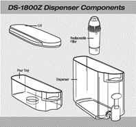 | |
|
Features capabilities/ functions |
Ex.1. Wireless keyboard: |
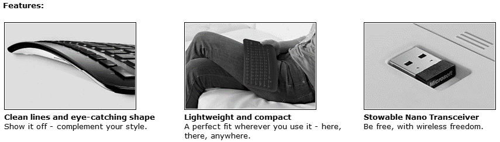 |
| Image or view | Ex.1. Tablet: | |
|
Manifestation/ sample/ preview/ excerpt |
Ex.1. Book: | 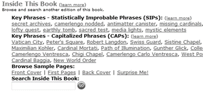 |
| Ex.2. Music: | 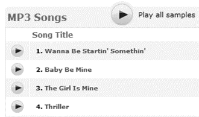 | |
| Illustrations |
Ex.1. Digital camera: |
Sample picture taken |
| Ex.2. Sofa set: |
Bobkona sofa set fitting in a home |
|
Context information
Context information does not directly address the specifications, features, functions, and performance of the product; instead context supplies information about its making, its purchase, its use, and its relations with other products. It may not lead to direct judgments about the product's value; however, context information helps to address consumers' additional concerns, set their thinking within a broader and richer background, and thus better inform their decisions. Compared to direct information, context is secondary information and its presence and richness are more subject to individual products. For example, the collected traditional experience goods (shoes, jeans, and sofa set) in this study seem to have little context information.
As compared to other information types, context is most interesting and much diversified; it is very inclusive and contains a large variety of manifestations. In the following, different types of context information are exemplified.
-
Provenance-related context: answers the questions of who made the product,
where and how it was made, as well as when it was made available.
These types of information can be used to imply the quality of a product and to
strengthen the consumer's confidence in the product. (See examples in Table 3).
Table 3: Examples of provenance-related context information.Context type llustrating examples from the case analysis Provenance info Author, artist, publisher, translator, actor, manufacturer, brand, copyright, etc. Informaton about author Ex.1. Book: Dan Brown is the #1 New York Times bestselling author of The Da Vinci Code and, previously, Digital Fortress, Deception Point, and Angels & Demons. He is a graduate of Amherst College and Phillips Exeter Academy, where he spent time as an English teacher before turning his efforts to writing full-time. He lives in New England with his wife. Visit the author's website at www.danbrown.com. Info about manufacturer Ex.2.
Home theatre:Klipsch – Power. Detail. Emotion.
Since 1946, proprietary horn-loaded technology has been the driving force behind the Klipsch's highly acclaimed, stunningly precise sound. Superior quality, horn-loaded speakers are an absolute must for delivering the powerful, detailed soundtracks of today's demanding blockbusters. Perhaps that's why 50 percent of all new theatres in North and South America, as well as Korea and Australasia install Klipsch products.
-
Purchase (selection)-related context: such as quantity in stock, shipping,
promotion, warranty and return policy, and product selection guide. This type of context
information helps to develop interest and confidence in the process of purchase.
(See examples in Table 4).
Table 4: Examples of purchase-related context information.Context type Illustrating examples from the case analysis Promotion Ex.1.
Anti-aging cream: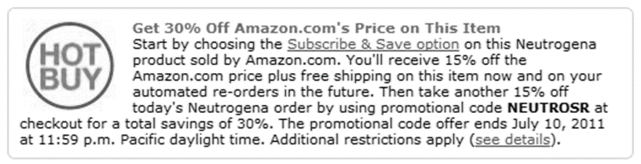 Ex.2. Book: 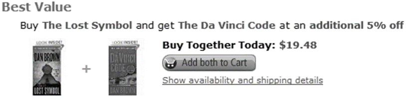 Selection guide Ex.1.
Android phone:
-
Use-related context: provides information related to product use; instructs
customers how to use the product safely and care for it. The use-related context allows
potential buyers to place themselves in future typical use scenarios, think through
some of the potential problems, and use the information to evaluate the product
against their own using habits or constraints. For example, for clothing the
maintenance work of 'Machine wash' vs. 'Dry clean' may make a difference in the
consumer's choice. (See examples in Table 5).
Table 5: Examples of use-related context information.Context type Illustrating examples from the case analysis User instruction Ex.1.
Anti-aging cream:Apply nightly to cleaned face and neck. Smooth a pearl-sized amount evenly in gentle massaging strokes until fully absorbed.
Ex.2.
Water dispenser: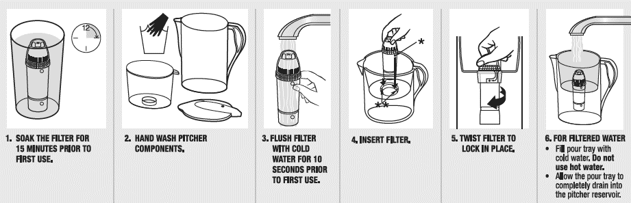 Life span Ex.1.
Water dispenser:Each filter has a lifespan of about one to two months (or roughly 40 gallons of water). A handy gauge indicates when the filter needs to be replaced. Safety information Ex.1.
Multivitamin:As with any supplement, if you are pregnant, nursing, or taking medication, consult your doctor before use. Accidental overdoes of iron-containing products is a leading cause of fatal poisoning in children under 6. Keep this product out of reach of children. Maintenance Ex.1. Jeans: Machine wash. Ex.2. Sofa set: To care for the sectional set, spot clean with a gentle soap and water.
- Relations with other products: Situates the current product within a network of products (such as broader category) and makes recommendations. The primary purpose here is to increase the consumer's awareness of a broader product network, so as to induce more interests and expand sales. The category of “Bought together” is a typical Amazon feature based on consumer data mining, which in turn encompasses many kinds: “Frequently bought together”, “Customers who bought this item also bought”, “What other items do customer buy after viewing this item?”, “Consumers also bought this items by”, and so on. Apparently there are overlapping results among different “Bought together” algorithms. As observed, these algorithms not only bring up similar products (e.g.,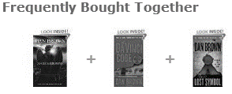 ), but also brings up products likely used together (e.g.,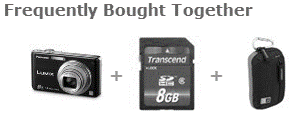 ). Rather than being measured directly as in similarity-based comparison discussed later, the achieved similarities here is simply the by-product (instead of the aim) of customer data analytics. This puts them into the user-based context category rather than the similarity-based comparison category. (See examples in Table 6).
| Context type | Illustrating examples from the case analysis | ||
|---|---|---|---|
| Broader scope | Ex.1. Music: | ||
| Ex.2. Sofa set: | 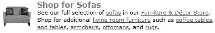 | ||
| Used by | 1) Citation | Ex.1. Book- Angels & Demons: | |
| 2) Movies | Ex.1. Book- Angels & Demons: | Adapted as motion picture: | |
| Recommendation | Ex.1. Android phone: | ||
|
Ex.2. Home theatre: |
Amplifier and receiver recommendations | ||
| Bought together | Ex.1. Book: | ||
|
Ex.2. Digital camera: |
|||
|
Ex.3. Digital camera: |
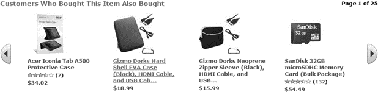 | ||
| Ex.4. Book: | 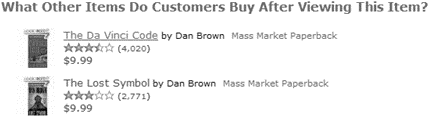 | ||
| Ex.5. Book: | 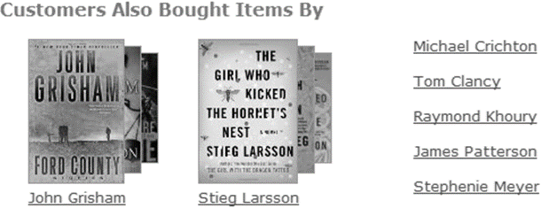 | ||
Condition information
Following the generic typology, the information about compatibility and system requirements falls into the category of Condition–Helping or hindering factor (condition). Similar to context information discussed above, it also assists the customer in making better informed decisions. In the original topical relevance typology, the category of Condition was included in Context but was later separated out to emphasize its higher degree of specificity (such as in clinical analysis). However, in the current e-retailing context, it is arguable whether there is enough justification to differentiate Condition from Context. The collected cases in this pilot study supply very limited instances and more data are required for us to draw the final conclusion. Speaking solely for the following two condition information types, they may well fit into the category of use-related context. (See examples in Table 7).
| Condition type | Illustrating examples from the case analysis | |
|---|---|---|
| Compatible with | Ex.1. Music: | Compatible with MP3 Players (including with iPod), iTunes, Windows Media Player. |
| Requirement | Ex.1. Android phone: |
System requirements:
|
Comparison information
This category emphasizes the element of comparison and provides similarity-based options. Just as Relations with other products (context), its purpose is also to deliberately broaden consumers' horizon of products and enhance their awareness and interests of related products. However, it is important to note that these similarities are measured based on the intrinsic properties of the products, rather than the external, contextual associations created by consumer browsing and buying activities, and therefore different from the “Brought together” category. Amazon.com uses various types of algorithms to detect and calculate similarities between products, such as “by category”, “by subject (topic)”, “by the same author”, and so on. (See examples in Table 8).
| Comparison type | Illustrating examples from the case analysis | ||
|---|---|---|---|
| Price comparison | Ex.1. Book: | ||
| Ex.1. Digital camera: |
|||
| Format comparison | Ex.1. Book: | 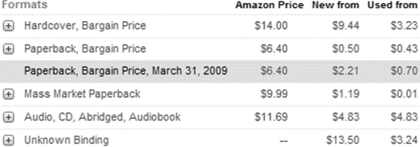 | |
| Similar product | 1) By category | Ex.1. Sofa set: | 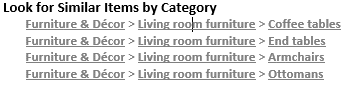 |
| 2) By subject | Ex.1. Book: | ||
| 3) By author | Ex.1. Book: | 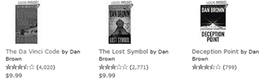 | |
Evaluation information
A great number of studies have confirmed that consumers are highly dependent on user evaluations (reviews) on the web, even though they might not always follow these reviewers' opinions and suggestions (Sen and Lerman 2007, Senecal and Nantel 2004). Moreover, positive reviews seem to have a stronger influence on the consumer than negative reviews do (Vermeulen and Seegers 2009). Coming from a source of neutrality and user perspective, customer evaluation is regarded more reliable, unbiased, and informative compared to the information supplied directly by the seller. The reviews on Amazon.com are highly detailed and organized, covering many aspects of the product. It will be interesting to further investigate whether different types of evaluation information affect consumer decision making differently, for instance, does the source of evaluation make a difference, i.e., customer reviews vs. expert reviews? How much attention would consumers place to formal evaluation (such as double-blind clinical study) as compared to informal evaluation? What about ranking information? (See examples in Table 9).
Note: For simplicity, we have placed customer reviews and expert reviews under Evaluation because they are most important for the evaluative information they contain. However, reviews may also include many types of information other than evaluation, such as tips on how to use a product.
| Evaluation type | Illustrating examples from the case analysis | |
|---|---|---|
| Ranking | Ex.1. Andriod phone: |
|
| Like | Ex.1. | |
| Customer review | Ex.1. Water dispenser: |
Average Customer Review
|
| Expert review | Editorial reviews, e.g., 'From Publishers Weekly', Critic's evaluation | |
| Ex.1. Home theater: |
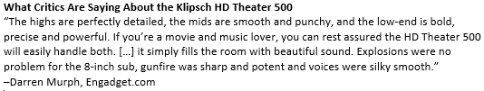 | |
| Formal evaluation | Ex.1. Anti-aging cream: |
Double-blind, 8-week clinical study of 40 women 40 to 65 years of age 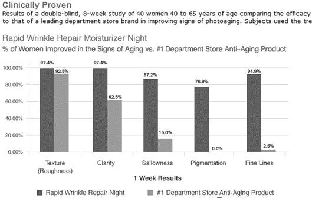 |
Conclusions
Making online purchase decisions is a process combining quality/price evaluation and relevance judgment. Consumers need to find out not only the quality but also the relevance of the product to their personalized needs and requirements. Applying the function-based topical relevance typology to analyse online product-relevant information provides a basis for us to further discuss how different types of information contribute to this evaluation and judgment process.
Through this study, direct (matching topic), context (including condition), evaluation, and comparison are identified as the four most applicable and prevalent information types from Amazon product pages. The more argument-linked and reasoning-centred information types such as evidence and cause/effect, and purpose/motivation are not noticeably significant from the analysis. However, this may be due to the small sample gathered from a single source (Amazon.com). As guided by this pilot study, more cases will be collected from different sites in US as well as in China to allow more systematic comparison between product types in relation to cultural contexts.
The focus or role of each information type is summarised in the following:
- Direct (matching topic): answer the questions of what the product is and what it can do;
- Context: supply additional information related to its making, it purchase and selection, its use, and its position in the product network;
- Comparison: identify similarity-based products and options; here similarity is broadly defined and has many meanings, such as, common feature, shared use context, same brand/manufacturer, etc.
- Evaluation: answer the question of how well it performs.
The in-depth analysis also extends and enriches the original function-based typology by introducing new sub-categories. Another finding is that a lot of site features and provided information serve the same purpose of introducing other related products. In many cases, these features and information occupy over 50% of the entire product page. The intention is clear but what are the effects on consumers' buying is yet to be discovered. Instead, with the potential risk of information overload, does the extra information further distract the consumer from making focused comparison and decision?
The presence and richness of individual information types seem to vary largely with the type of product, for instance, electronics in general have more detailed accounts than clothing, shoes, and furniture. From our observation, this variance cannot be directly attributed to the search-experience-credence differences; instead, whether or not the critical features of the product can be evaluated digitally seems to play a more significant role. For example, the critical features of a dress are much more difficult to be digitized than those of a camera, even though they are both experience products. As presented at e-storefronts, the distinction between search products and experience products needs to be revisited and refined.
Our ultimate research goal is to systematically investigate and compare the effects of various types of product information on the online consumer decision-making process. We first apply a function-based topical information typology (Huang 2009a, Huang 2013) to guide the systematic categorization of online product information and thus enable a focused comparison between different information types. The findings will provide a basis for prioritized information provisioning and organization which helps to remedy the pressing issue of information overload in e-retailing especially with small-screen mobile devices. Since the information type preferred for making online buying decisions varies significantly with the product type, retailers need to customize their information strategy to different types of products (Girard et al. 2002). For example, on the one hand, Internet retailers could focus on direct information for selling search products and be more selective about providing other types of information. On the other hand, they want to intentionally offer more context, comparison, and evaluation information to complement standard product description, so as to “motivate consumers to purchase the difficult-to-sell products online” (Girard et al. 2002: Discussion). To combat information overload in e-commerce, simply limiting the absolute amount of product information is not enough; and it can also be problematic since insufficient information might in fact compromise consumers' ability to make fully informed decisions. A more promising strategy will be better designing, prioritizing, organizing, and tailoring product information to assist online shoppers to fully compare and evaluate products of interest and make well-informed purchases.
Acknowledgements
We thank the anonymous reviewers for their constructive comments. This work is supported by the National Natural Science Foundation of China (NSFC) research grants 71102100 and 70971141, by China Postdoctoral Science Foundation research grant 1204014, and by the Fundamental Research Funds for the Central Universities of China grant 1209126.
About the author
Xiaoli Huang is an Assistant Professor in Business School at Sun Yat-sen University, Guangzhou, China. She worked as an Enterprise Information Architect at the International Monetary Fund (IMF) from 2009-2010. She received her MLIS and PhD from the College of Information Studies, University of Maryland at College Park. She can be contacted at: hxiaoli3@sysu.edu.cn
Dagobert Soergel is a Professor in the Department of Library and Information Studies, Graduate School of Education, at the University at Buffalo, NY. He is also a Professor Emeritus in the College of Information Studies at the University of Maryland, College Park. He received his PhD (Dr.phil) in Political Science from University of Freiburg, Germany. He can be contacted at: dsoergel@buffalo.edu